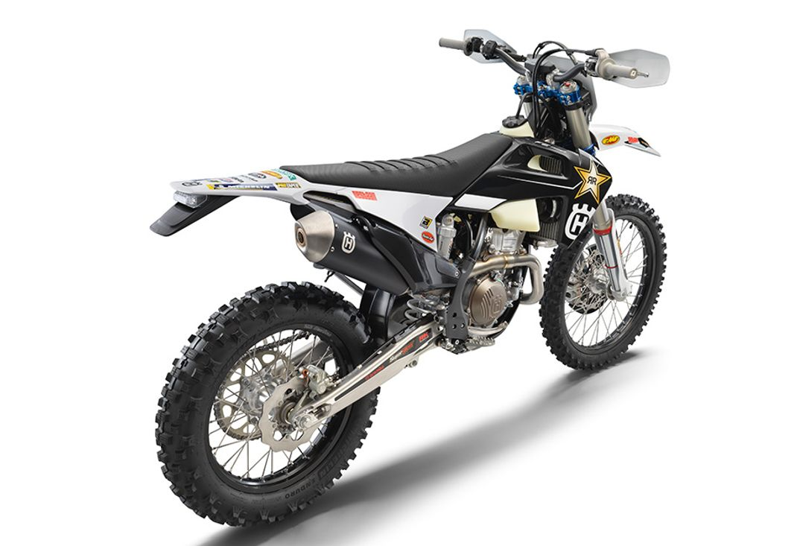
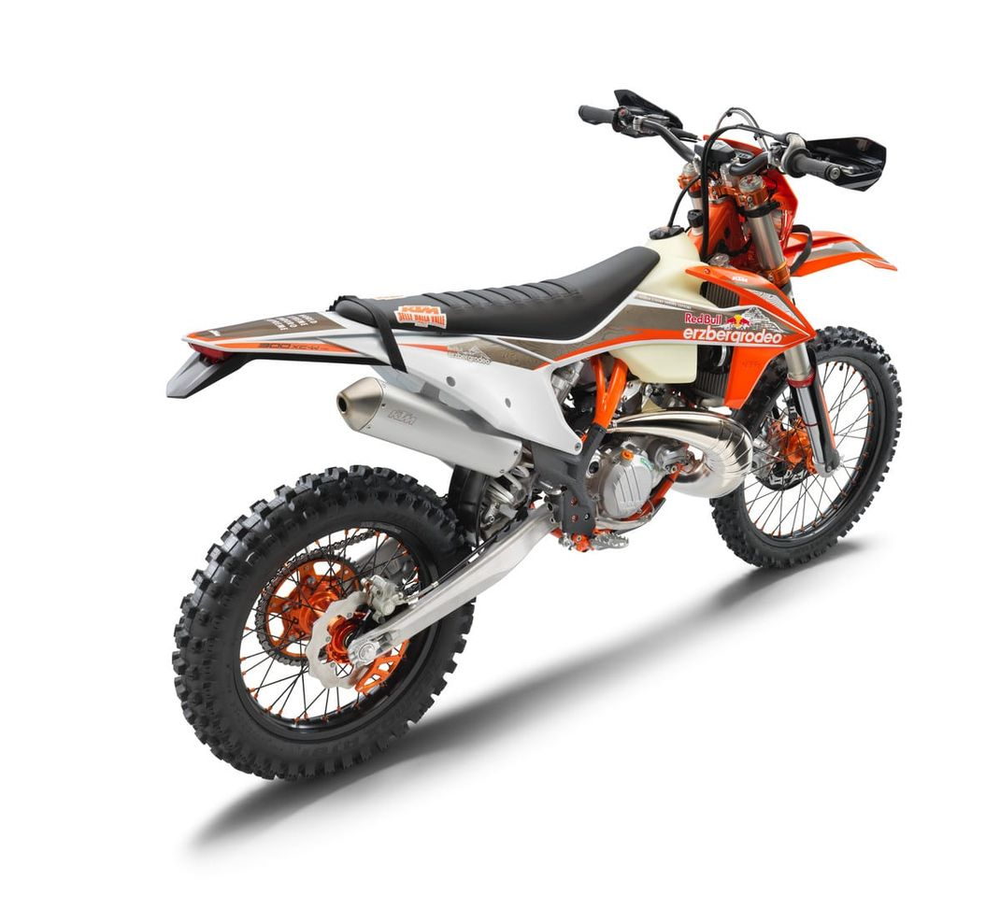
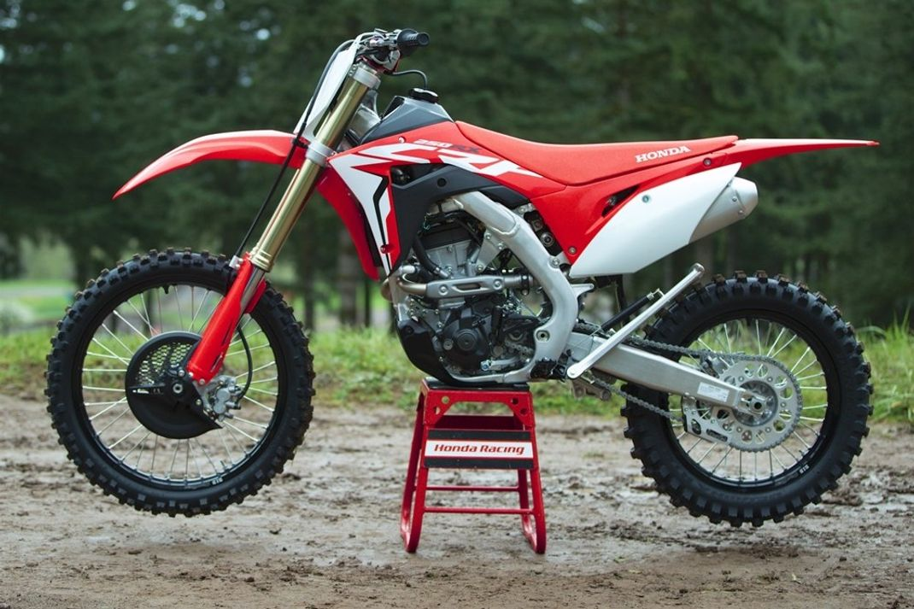
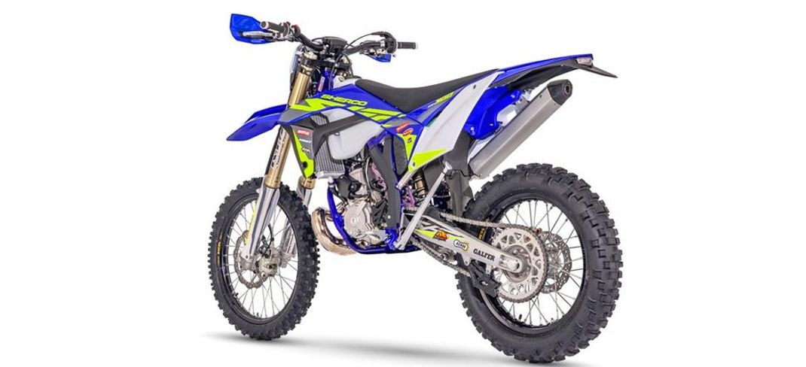
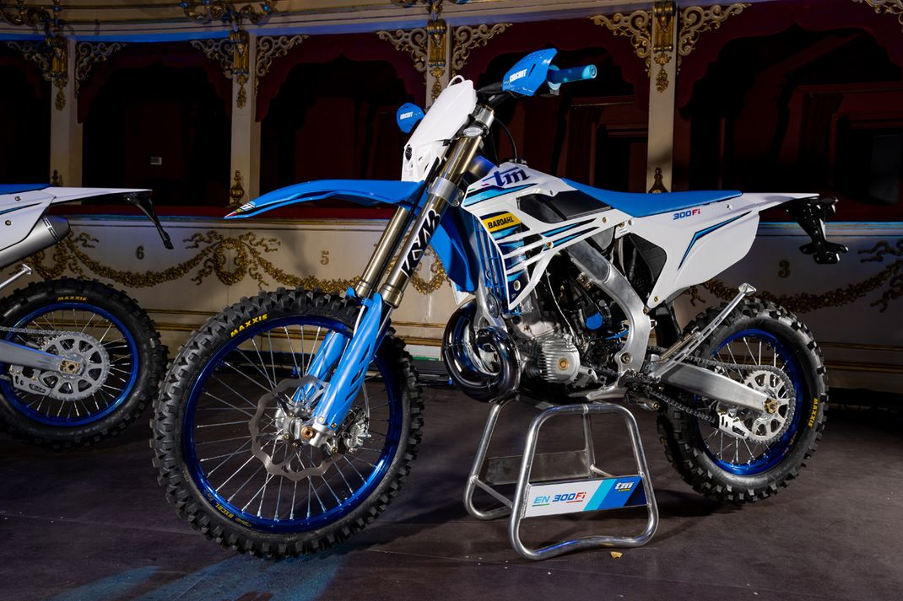
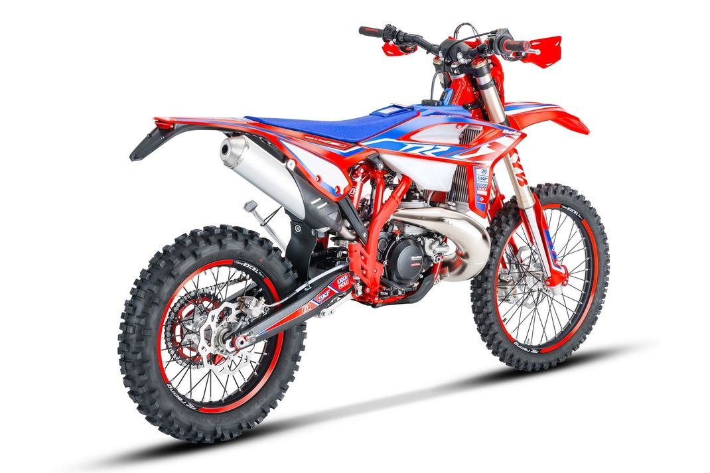
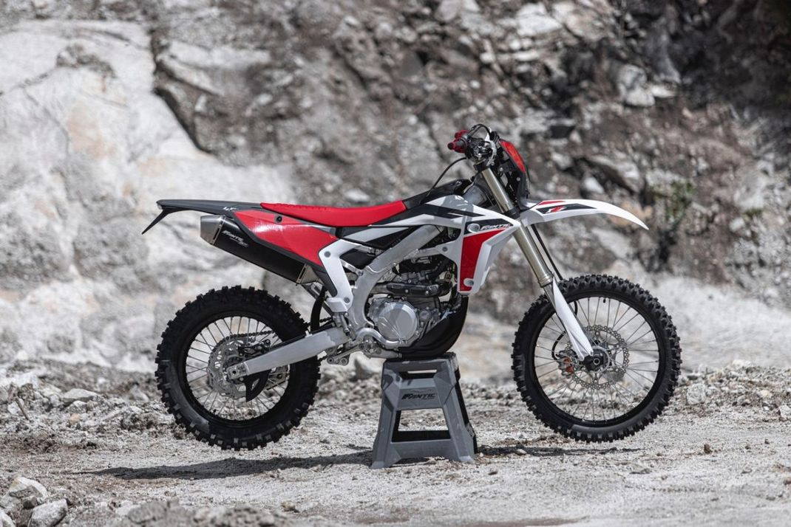
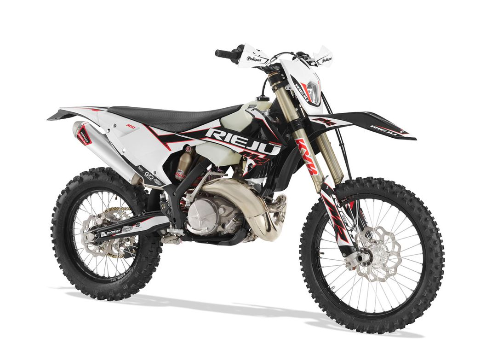

Husqvarna
Ще навесні 2021 року шведський виробник Husqvarna Motorcycles, який зараз належить австрійському концерну KTM, першим
представив нову «колекцію» ендуро-байків останнього зразка. До неї включили відразу 7 оновлених моделей: три 2-тактні
(200, 300 та ТЕ 150), а також чотири 4-тактні (501 4Т, 350, FE250 та 450).

Всі мотоцикли були суттєво оновлені, обзавелися новими, більш досконалими передустановками підвісок, покращеними
гідравлічними гальмами виробництва компанії Braktec (укомплектованими відмінними дисками від GSK) гідрозчепленням тієї ж
фірми, налаштованої на жорсткіший режим роботи пружину задньої підвіски, а також ідучими вже Michelin.
Мотоцикли TE 300i і FE 350 Rоskstar Еditiоn - це особливі машини лімітованої серії, для складання яких використовували
різні компоненти, що входять в лінійку аксесуарів знаменитої команди Roskstar Еnеrgy Nusqvаrnа Fасtоrу Rасing Еnd. Це,
відповідно, дво- та чотиритактні моделі з розширеним переліком неодноразово протестованих на змаганнях покращених
деталей, серед яких основні гальмівні циліндри, а також посилені супорти Брембо з гальмівними дисками останнього
покоління від Galfer. Обидва мотоцикли побудовані на рамах, виготовлених з хромомолібденової сталі, зі спеціальним
порошковим напиленням, що робить їх вигляд ще більшим і агресивним.
Крім нових моделей мотоциклів, компанія Нusqvаrnа також запропонувала своїм шанувальникам великий асортимент аксесуарів,
екіпіровки, захисного спорядження та іншої фірмової продукції.
Варто відзначити, що один з найкращих ендуро гонщиків, Грем Джарвіс їздить на Нusqvаrnа. Чи це не привід собі?
KTM

Звичайно ж, не відстала від бренду Husqvarna і компанія KTM, що володіє ним з 2013 року, представила публіці не менш
солідний оновлений набір ендуро-апаратів. У нього також увійшли як дво-, так і чотиритактні машини моделей: 150, 250,
300 TPI і 250, 350, 450, 500 відповідно. Кожна з новинок увібрала в себе чимало суттєвих покращень.
KTM 300 EXC TPI зразка 2022
Найбільш істотні зміни спостерігаємо в налаштуваннях підвісок, які стали жорсткішими, а також у системі циркуляції олії.
Злегка вдосконалилася вилка WP XPLOR, яка тепер демонструє нижчий коефіцієнт тертя. Для цього розробники оновили
зовнішні трубки і добре відполірували пружину з метою зменшити рівень забруднення олії. Також був перероблений картридж,
точніше його верхнє різьбове з'єднання, що дозволило поліпшити відбій. Нарешті, амортизатор WP PDS отримав нове кільце
ущільнювача, що демонструє високу стійкість до навантажень.
Усі без винятку моделі останнього покоління отримали нове графічне оформлення у фірмовому стилі, стильне синє
обтяжування сидіння та агресивні покришки MAXXIS MaxxEnduro, призначені лише для європейського ринку. Гума пройшла
серйозне тестування в умовах, максимально наближених до «бойових», продемонструвавши найвищий рівень надійності та
зносостійкості.
Крім того, двотактний мотоцикл KTM 250 XC-W TPI використав нове співвідношення зірок: 13/52.
З погляду графічного оформлення найцікавішим на наш погляд є дизайн машини КТМ 300 ЕХС SIХ DАYS. «Родзинка» полягає у
додаванні в дизайн окремих фрагментів карти світу, щоправда, без прив'язки до будь-якої конкретної країни.
Залишається лише згадати оновлену машину КТМ 350 ЕХС-F Fastor Еditiоn – саме її попередниця брала участь під Хосепом
Гарсія на ЧС, дозволивши тому стати переможцем італійського ISDE.
На думку багатьох тренерів і спортсменів, мотоцикли марки KTM - це вірний шлях до подіуму, тому радять спортсменам -
початківцям .
Новинки GasGas
Начебто, ще тільки вчора цей виробник провів офіційну презентацію нової колекції мотоциклів для бездоріжжя, але ми вже
знову маємо можливість оцінити наступне покоління машин GasGas зразка 2022. Як бачимо, компанія не потребувала занадто
великої кількості часу для випуску у світ чергової партії знаменитих червоно-білих мотоциклів! Докладно зупинятись на
них не будемо, оскільки ще не встигли оцінити техніку безпосередньо у справі, скажімо лише, що з поточного року в
асортименті даного виробника можна знайти не тільки мотокросові та крос-кантрійні мотоцикли, але також двотактники для
enduro. Такими є моделі EC 250 та EC 300.
Мотоцикли цієї марки зарекомендували себе як якісну альтернативу KTM, вони навіть збираються на одному заводі. Тому
купити мотоцикл GasGas це також гарне рішення.
RedMoto
Як уже згадувалося на початку, йдеться про офіційний європейський підрозділ японської компанії Honda, який стабільно
бере участь на ЧС EnduroGP. У його омологованій лінійці зразка 2022 року всього чотири мотоцикли з моторами об'ємом 250,
300, 400 і 450 «кубиків». Найбільше нововведень і апгрейдів вбрали машини CRF250RX і CRF300RX. Представники виробника
гордо називають першу з них найпотужнішим мотоциклом свого класу серед усіх, хто раніше бачив світло.

Які зміни вніс 2022-й у машини CRF250RX та CRF300RX:
- Оновлена рама запозичена у моделі CRF450R.
- Масштабні вдосконалення головок циліндрів, а також більш продумана впускна та випускна системи. Завдяки цьому вдалося не тільки на 15% покращити роботу двигуна на низах і в середньому
діапазоні, але і на десять відсотків підвищити максимальну потужність двигуна.
- Кулачки на високих обертах стали синхронізуватися більш точно і злагоджено, зросла їхня надійність у довгостроковій
перспективі.
- Було встановлено нове, ефективніше запалення.
- Мотоцикли обладнали форсунками із зменшеними кутами нахилу (значення знизилося до 60°).
- Апарати оснастили оновленою, безвідмовнішою системою дев'ятидискового зчеплення.
- Застосовується КП посиленого типу з покращеними передатними значеннями.
- Процес перемикання передач став плавнішим завдяки покращеному барабану.
- Встановлено ефективнішу систему радіаторного охолодження.
- Короб фільтра повітря збільшили майже на 80%, було спрощено доступ до самого фільтра.
- Пластикове обваження було полегшено, а процес його демонтажу спрощений за рахунок зменшення кількості кріпильних болтів.
- Сидіння стало трохи легшим і коротшим, а також на 10 мм нижче попереднього в задній частині.
- Загальна вага мотоциклів знизилася на 3 кілограми.
- Моделі отримали за новою передньою 49-міліметровою вилкою Showa, обладнаною покращеними клапанами. Хід новинки був
збільшений на 5мм, осьові затискачі стали жорсткішими.
- Стала жорсткішою також і пружина задньої підвіски.
- Ємність паливного бака дорівнює 7,3 л.
- Були встановлені покришки Metzеler Six Dаys Ехtrеmе.
- Поновлено графічне оформлення.
Слід згадати, що серйозне оновлення апаратів, як і представників лінійок Honda R і RX, відбулося ще минулого року. Тут
вам і зниження загальної ваги на два кілограми, і кардинальне оновлення підвіски з рамою, і застосування нового
гідрозчеплення, і підвищення потужності разом з моментом, що крутить, і апгрейд електронної начинки, і впровадження
більш просунутої системи запуску, і багато іншого.
Якщо говорити про Honda CRF400RX, то цього модельного року вона була змінена не настільки кардинально. На увагу
заслуговують хіба що переналаштування підвіски та ЕБУ, що покращила якість управління та відгук двигуна на команди
пілота.
Sherco
Sherco – виробник мотоциклів родом із Франції, у чиєму модельному ряді красується 10 моделей. У свою чергу, в серії
Racing сьогодні складається всього три апарати: чотиритактний універсал 300 SEF і пара двотактників - 250 і 300 SE. Що
стосується лінійки Factory, то в ній асортимент помітно ширший: він складається з трійки двотактників (SE 125, 250 та
300) та «квартету» 4-тактних машин (SEF 250, 300, 450 і 500).

Останні оновлення апаратів Sherco Fastоrу Еndurо:
- Удосконалена вилка з картриджем закритої конструкції КYВ.
- Система вихлопу нової генерації Аkraроvič Titanium 4Т.
- Більш ефективний захист двигуна AXP.
- Більш ефективний гальмівний диск виробництва Galfer спереду і колодки Брембо.
А також дрібниці по типу менш безглуздої рульової накладки Nеkеn, стильного сидіння Sеllе Dаllа Vаllе, нового графічного
оформлення тощо.
Мотоцикли Sherco Rасing Ендуро:
Крім все тих же дрібниць на кшталт нової зручної сидічки, практичних грипсів, стильної графіки, солідних чорних дисків,
кожухів і що з ними, моделі 2022 можуть похвалитися:
- Новою вилкою, обладнаною картриджем відкритого типу Kayaba та новим амортизатором від того самого виробника.
- Більш практичними покришками Miсhеlin mеdium.
- Системою вихлопу FMF, яка встановлюється в мотоцикли SE 250 і 300 2Т базової комплектації.
- Надійні колодки Брембо.
- Більш зручною лапкою перемикання швидкостей, яка знімається простіше і швидше за попередницю.
Новинки ТМ
В оновленому асортименті виробника TM знаходимо дев'ять апаратів для enduro: чотири двотактники з системою паливного
впорскування EN125, EN144, EN250 і EN300 (останні дві машини доступні також і без системи впорскування), і три
чотиритактні EN 250, EN50 і EN5.

Трохи конкретики щодо нових байків TM Enduro:
- Кожен з мотоциклів версії 2022 отримав по новій спрощеній рамі вдосконаленої конструкції, що помітно підвищило стійкість
машини. Також було використано модернізовані підрамники.
- Загальна ширина машин зменшилася на 0,30 см завдяки використанню сучаснішого пластикового обважування.
- Модернізовані передні крила для більш ефективного захисту гонщика та техніки від бруду.
- Конструкцію та систему фіксації педалі заднього гальма доопрацювали та зробили більш надійною. Підніжки стали ширшими.
- Усі мотоцикли в базовій комплектації постачаються з шинами Maxxis.
До менш важливих нововведень можна віднести нове, зручніше сидіння, рогачі грипси New Circuit, яскравіший стоп-сигнал
зі
світлодіодами, тримач номерного знака і так далі.
Моделі 2Т отримали такі оновлення:
- Більш продуктивний двигун з практичним коробом фільтра повітря.
- На всіх моделях встановлено нову 6-ступінчасту коробку передач.
- Оновлено систему паливного упорскування.
- Встановлено нове масло змішувальний бак.
- Перероблено систему вихлопу.
- Впроваджено нову електропроводку.
Beta Motors
Модельний ряд італійської компанії Beta поповнився сімома новими моделями: трьома двотактниками RR 125/250/300 (саме в
них ви виявите найбільше змін), і чотирма 4-тактниками RR 350/390/430/480. Насамперед зазначимо, що всі без винятку
мотоцикли тепер виробляються з новою підвіскою та передовим зчепленням. Остання з них отримала на озброєння діафрагмову
пружину, наділену трьома рівнями попереднього навантаження. Пілот отримав можливість швидко та легко перемикатися між
рівнями за допомогою кільця регулювання. У свою чергу чотиритактні машини обзавелися вдосконаленим електронним блоком
управління, а двотактник RR300 - кардинально переробленим мотором.

Зробивши основний упор на мотори та підвіску новинок 2022 модельного року, тосканські інженери ставили за мету створити
більш досконалі машини «зі збереженням унікального характеру попередників, всіх їх видатних властивостей, які роблять
кожну модель унікальною».
Нагадаємо, що тоді як двотактники 250 і 300 завжди були незмінно популярними у споживача, 4-тактні моделі Beta грали
ролі другого плану. Все змінилося тоді, коли британському гонщику ендуро Стіву Холкомбу захотілося пересісти на
350-кубовий чотиритактник, на якому молодий спортсмен уже з першої спроби став володарем титулу чемпіона світу EnduroGP
2020. Це і визначило подальшу долю блискучих машин.
Оновлення, реалізовані в Beta RR:
- Кардинально перероблений мотор 300 2T, найбільш значущі зміни в якому торкнулися циліндра (інженери збільшили його
діаметр), головки циліндра, поршня та гідророзподільника.
- Мотоцикли отримали нові ГБЦ та покращені гідророзподільники.
- У моделі RR300 встановлений трохи укорочений коленвал, що відповідним чином впливає на довжину ходу поршня.
- У тій же моделі зменшили діаметр глушника, що дозволило збільшити максимальну межу продуктивності двигуна та покращити
його керованість.
- Усі моделі оснастили новим зчепленням, у якому використовуються діафрагмові пружини.
- Чотиритактні моделі отримали нові ЕБУ, за допомогою яких можна ефективніше використовувати гальмування двигуном.
- У новому задньому амортизаторі зробили тонкі налаштування стиснення. Те саме здійснили і по відношенню до передньої
вилки, що позитивно позначилося на точності управління мотоциклами.
- Нове графічне оформлення.
Хорошим приводом купити мотоцикл марки Beta є те, що деякі моделі із заводу вже оснащені тюнінгом.
Fantic Motor

Італійська мотокомпанія із забавною назвою Fantic лише відносно недавно повернулася у сферу виробництва позашляхових
мотоциклів, але вже встигла досягти вражаючих успіхів. Мотоцикли цього виробника, «серцем» яких є двигуни Yamaha, які
засновані на шасі цього ж виробника, довели свою спроможність неодноразовими перемогами на ЧС з ендуро.
Модельний ряд 2020 року компанії був повністю «заточений» під молодіжний та юніорський класи змагань, але вже наступного
року у ньому з'явилися й дорослі моделі. Завдяки гонщику Давиду Гварнері, який виграв Е1 на чотиритактнику XEF 250,
стало очевидно, що ця техніка має цілком солідний потенціал. Які ж сюрпризи підготувала для нас Fantic Motor у 2022
модельному році?
Всі нові моделі в лінійці Fantic розробляються в тісній плідній співпраці з Motori Minarelli Spa, яка входить до складу
Yamaha Motors - звідси і японський двигун з шасі. Плодом спільної довгострокової творчості цих компаній стали чотири
моделі для мотокросу та трійка ендуро-мотоциклів XE 125 2T, XEF 250 4T та XEF 450 4T – остання машина була розроблена
повністю з нуля.
Крім того, у 2022 році було представлено ексклюзивний двотактний ендуро-мотоцикл XE125, приводом для створення якого
став 40-річний ювілей перемоги Гуальтьєро Бріссоні та італійської команди у змаганні International Six Days Enduro.
Нова модель XEF 450 – яскравий приклад успішної кооперації італійців і японців, у якому очевидно простежується слід
інженерної думки Ямаха. При цьому про решту мотоциклів цього не скажеш, хоча багато критиків і стверджують протилежне.
Сміємо вас запевнити, що всі машини є власною розробкою творців із Fantic, які використовують при створенні своїх
дітлахів лише деякі деталі Yamaha! При цьому змінюючи їх відповідно до власних потреб.
Мотоцикл XEF 450 отримав на озброєння ЕБУ Athena-GET із картами авторства Fantic Racing Department. Його співробітники
розробили і унікальне ПО WiGET, за допомогою якого можна «грати» установками мотора в залежності від переваг пілота та
умов траси.
Двигун мотоцикла використовує вихлопну систему Arrow, оснащену глушником з алюмінію і неймовірно гнучку в плані
налаштувань підвіску KYB. Також варто відзначити гальмівну систему Nissin та ендуро-покришки Metzeler Six Days.
Говорячи про новинки від Fantic, не можна не згадати про нову модель для ралі, представлену на міланській виставці
EICMA, а саме про XEF 450 Rally. Саме верхи на цьому монстрі Франко Пікко наступного року вирушить на ралі Дакар. У
серію ця модель піде не раніше літа наступного року.
Базою для XEF 450 Rally, як і для XEF 450, послужила перевірена багатьма гонками модель Yamaha WR450, проте обваження та
інші ралійні елементи були розроблені італійськими інженерами. Крім власне спортивних досягнень, завданням Франко Пікко
буде всебічна перевірка мотоцикла в найскладніших «бойових» умовах, а отримані під час цього результати будуть
використані під час створення остаточної серійної версії.
Rieju

Останніми на сьогодні стануть новинки на 100% іспанського виробника RIEJU , відомого далеко не кожному шанувальнику
позашляхових мотоциклів. Адже історія компанії почалася ще в 1934 році з виготовлення велосипедних аксесуарів! У 1945
році світло побачило перше моторизоване дітище цього виробника - велосипед з 38-кубовим французьким мотором, що
розганявся до 40 км/год. З 1964 почалася розробка та виробництво власних двигунів, а в середині 70-х на ринку з'явилися
перші позашляхові мотоцикли. Дебют на змаганнях з ендуро представників RIEJU відбувся у 78-му, і станом на поточний
момент за іспанською командою числиться 12 перемог у національних чемпіонатах з цього виду мотоспорту.
Знаменним для компанії Rieju став 2020 рік - саме тоді вона купила потужну промислову платформу від відомого виробника
мототехніки GasGas, на якій і був розпочатий випуск власних ендуро-мотоциклів. Оскільки досвіду в цій справі іспанцям
було не позичати, новинки відразу ж виходили дуже конкурентоспроможними, і дуже швидко зайняли заслужене місце на ринку
цієї техніки. Разом з тим, вперше за останні 30 років представники команди Rieju почали брати активну участь у різних
чемпіонатах, серед яких італійський ISDE.
Але що там із ендуро-новинками зразка 2022 року, які анонсували іспанці влітку цього року? Поки що їх не так багато:
всього чотири двотактники, але дуже гідні!
Машини серії MR Ranger – це представники так званого класу «легке ендуро», який останніми роками стрімко набирає
популярності серед новобранців у цьому виді спорту та трейлрайдерів. Мотоцикли, що оснащуються 2-тактними моторами 200cc
і 300cc, відрізняються від своїх попередників заниженим сидінням, налаштованої на м'яку роботу підвіскою, а також
"мирнішими" двигунами. Це справді ідеальний варіант для тих, хто робить лише перші несміливі кроки у світі ендуро! Що
стосується мотоциклів MR Racing і MR Pro, то вони вже орієнтовані на участь у професійних змаганнях та виробляються з
використанням більш якісних та дорогих компонентів.